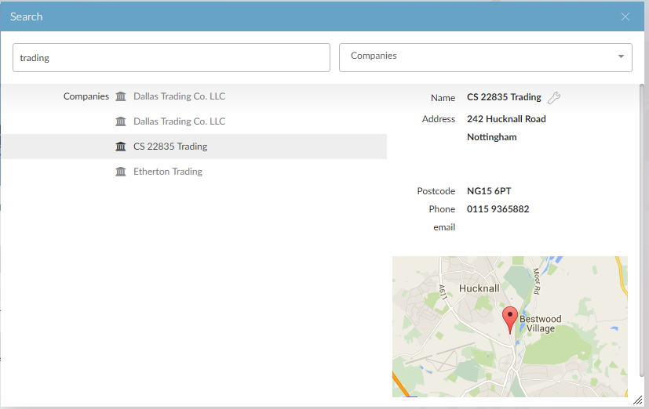

To use Global Search:
- Press Ctrl+Shift+? (or click the
 button on the page banner).
button on the page banner).
The Global Search screen appears.
- Type a word or words to search for.
As you type,

The results will match words that begin with your search words.
- You can type the words you want to search for in any order. For example:
report balance or balance report or bal rep
manchester const or manch construction - To search for an exact match, enclose it in quotation marks. For example, to search for names that contain the whole word "sub", but not "subcontract", type "sub".
- You can also use | (pipe) to represent "or", and & to represent "and". For example:
(John|Sally) Smith will search for John Smith and Sally Smith.
- You can enter the module code to help identify functions with similar names (for example, posting report CS will show only
If the total number of matches is less than 500, the results show all matches. If the total number of matches is 500 or more, only the first 10 results from each category are shown, and if there are more than 10 results in a category, a more... link takes you to a full-screen browse of those records.
- You can type the words you want to search for in any order. For example:
- You can filter the search to show only records that belong to the categories you select.

- If you press the Up or Down arrow keys, or move the mouse pointer over an item, a detail frame to the right will be displayed with more detail about that record.

- Click the link on an item (or press Return on a highlighted item) to go directly to that item. Depending on how your system is configured, the page may open in your current